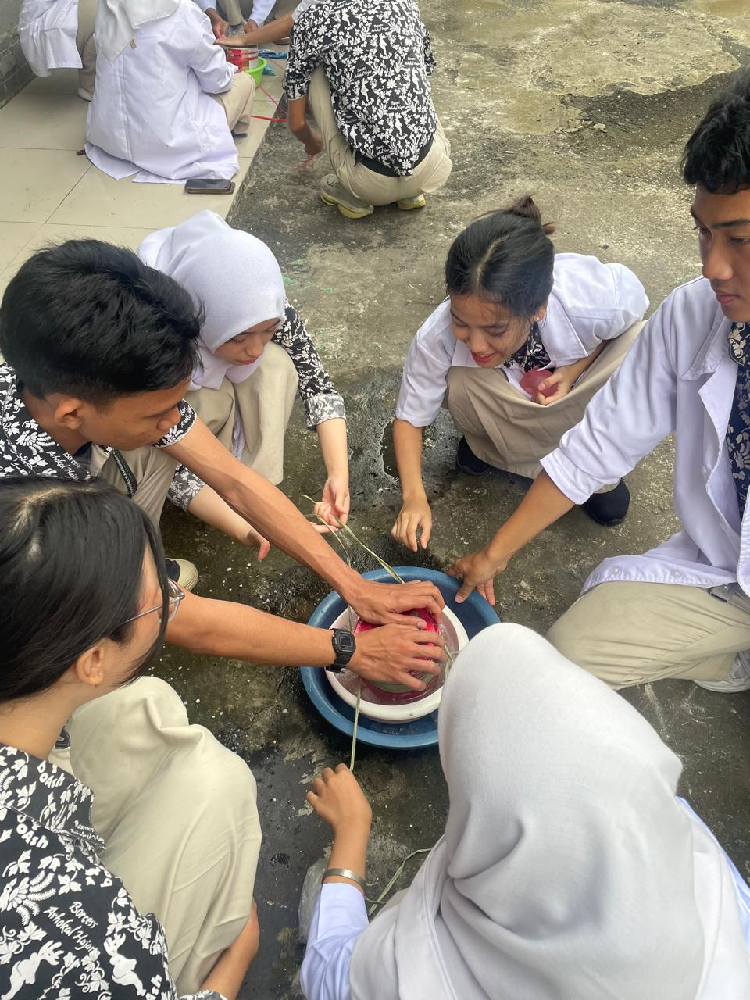
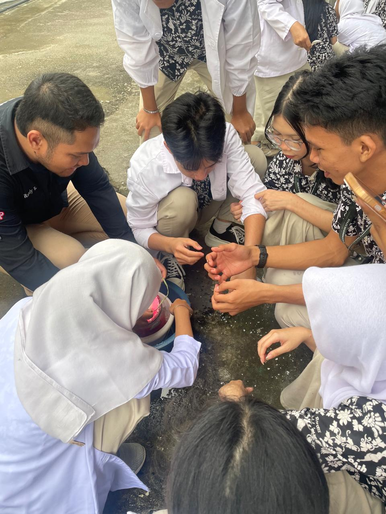

Proyek ini merupakan kegiatan praktik kimia untuk memahami penerapan sifat koligatif larutan dalam kehidupan sehari-hari, khususnya penurunan titik beku.
Sifat koligatif larutan adalah sifat larutan yang bergantung pada jumlah partikel zat terlarut, bukan pada jenis zatnya.
Penurunan titik beku merupakan salah satu sifat koligatif larutan. Penambahan zat terlarut seperti garam ke dalam air dapat menurunkan titik beku air.
Keterangan:
Pada pembuatan es krim putar, garam dicampurkan dengan es batu sehingga titik beku campuran menjadi lebih rendah. Campuran es dan garam menyerap kalor dari adonan es krim sehingga adonan menjadi dingin dan membeku.
Berikut merupakan dokumentasi kegiatan praktik pembuatan es krim putar bersama teman-teman.

Dokumentasi 1 - Proses persiapan praktik.

Dokumentasi 2 - Proses memutar es krim.
Berdasarkan kegiatan praktik, campuran es batu dan garam menghasilkan suhu yang lebih rendah dibandingkan es batu saja. Kondisi tersebut membantu proses pelepasan kalor dari adonan sehingga adonan es krim mengalami pembekuan.
Proses pemutaran juga membantu adonan membeku secara merata dan menghasilkan tekstur es krim yang lebih lembut.
Melalui proyek pembuatan es krim putar, dapat dipahami bahwa sifat koligatif larutan, khususnya penurunan titik beku, dapat diterapkan dalam kehidupan sehari-hari.
Penambahan garam pada es batu menurunkan titik beku campuran sehingga membantu proses pembekuan adonan es krim. Praktik ini memberikan pengalaman belajar secara langsung mengenai konsep kimia.